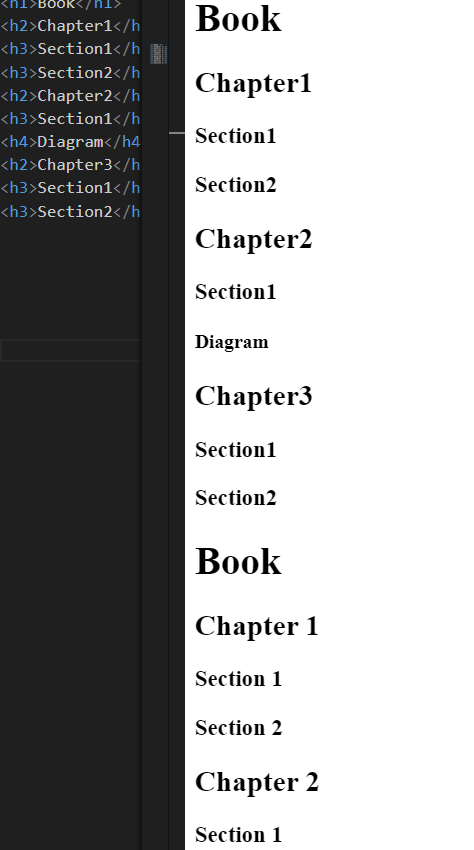
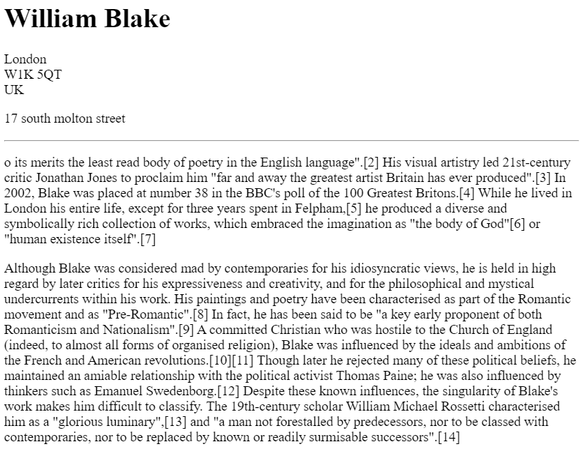
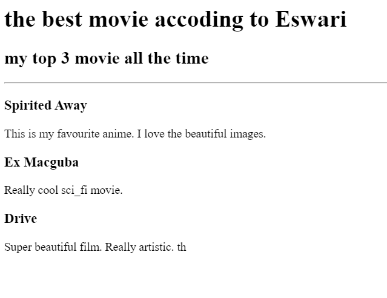
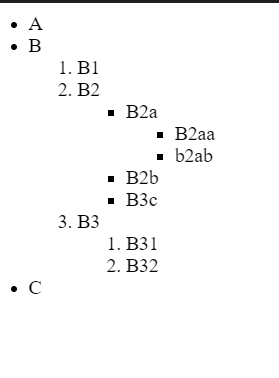
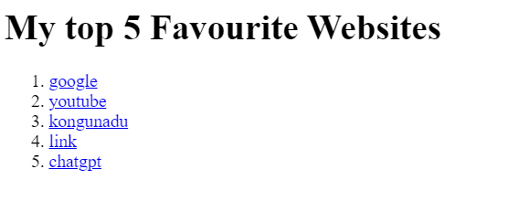
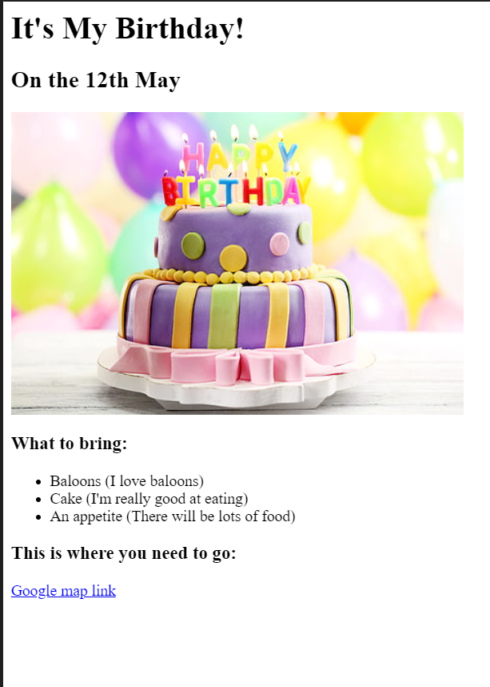
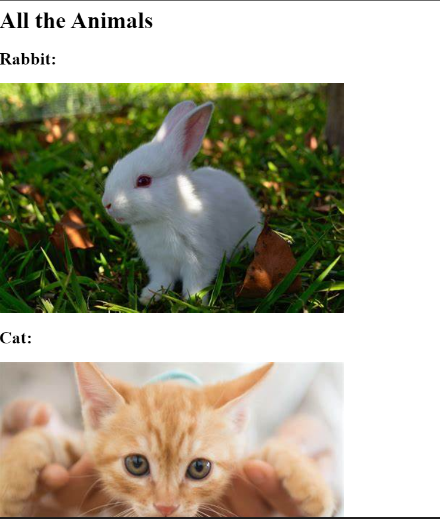

<!-- TODO 1: Create the HTML Boilerplate -->

<!-- TODO 2: Add Your previous projects' HTML into the public folder -->

<!-- TODO 3: Take screenshots of your project previews and add the images to the images folder -->

<!-- TODO 4: Add titles/subtitles etc. -->

<!-- TODO 5: Add a link to the project pages -->

<!-- TODO 6: Add images to show the project previews
HINT for TODO 6: You can use the height attribute set to 200 to make the image smaller:
https://developer.mozilla.org/en-US/docs/Web/HTML/Element/img#attr-height -->

<!-- TODO 7: Add the Contact Me and About Me page links -->
 <h1>Eswari'S Portfolio</h1>

 <h2>I'm a Web Developer</h2>
 <hr>
 <ol>
 <li><a href = " public/1.html" ><h3>first </h3></a></li>
 

 <li><a href = " public/2.html" ><h3> second</h3></a></li>
 

 <li><a href = " public/3.html" ><h3> third</h3></a></li>
 

 <li><a href = " public/4.html" ><h3> fourth</h3></a></li>
 

 <li><a href = " public/5.html" ><h3> fifth</h3></a></li>
 

 <li><a href = " public/6.html" ><h3> sixth</h3></a></li>
 

 <li><a href = " public/7.html" ><h3> seven</h3></a></li>
 

 <li><a href = " public/8.html" ><h3> eight</h3></a></li>
 

 <li><a href = " public/9.html" ><h3>nine </h3></a></li>
 
 </ol>
